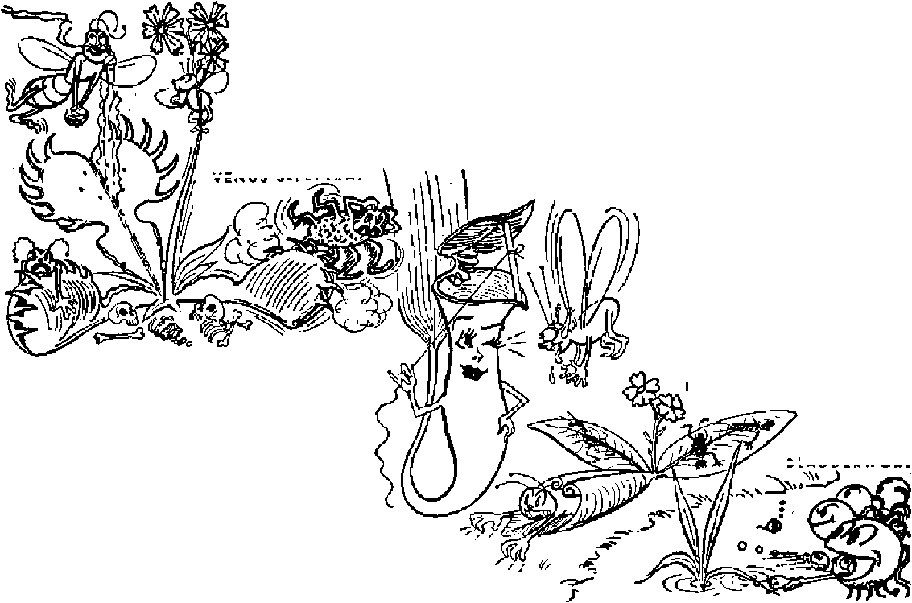

>for
these" strange plants, you should look in places where there is an

FLYCATCHER
SUNDEW
Eyewitness report c£ the mass uprising in Bogota
Amazing plants that the tables and eat animals
By order of Supreme Court
THE MISSION OF THIS JOURNAL
News sources that are able to keep you awake to the vital issues of our times must be unfettered by censorship and selfish interests. “Awoke!” has no fetters It recognizes facts, faces facts, is free to publish facts. It is not bound by political ambitions or obligations; it is unhampered by advertisers whose toes must not be trodden on; it is unprejudiced by traditional creeds. This Journal keeps itself free that it may speak freely to you. But it does not abuse its freedom. It maintains integrity to truth.
“Awake F* uses the regular news channels, but is not dependent on them. Its own correspondents ore on all continents, in scores of nations. From the four corners of the earth their, uncensored, on-the-scenes reports come to you through these columns. This Journal’s viewpoint is not narrow, but is international. It is read in many nations, in many languages, by persons of all ages. Through its pages many fields of knowledge pass in review—government, commerce, religion, history, geography, science, social conditions, natural wonders—why, its coverage is as broad as the earth and as high as the heavens.
“Awake 1” pledges itself to righteous principles, to exposing hidden foes and subtle dangers, to championing freedom for all, io comforting mourners and strengthening those disheartened by the failures of a delinquent world, reflecting sure hope for the establishment of a righteous New World,
Get acquainted with “Awake!” Keep awake by reading “Awake!”
WO*’**
Published Semi monthly Bx WATCHTOWER BIBLE AND TRACT SOCIETY, INC.
117 Adams Street Brooklyn I, N. Y., U. S. A.
N. U, KnuKB, President GzUnt Suites, Mwrefar#
Flvfl cent* a copy One dollar a year
Remittances should ba sent to office in your uoun- Chanpe of tddrew when sent » our office w be try in compliance .with regulations to guarantee expected effective within one Booth. Send your old . safe delivery of money. Remittances-are accepted at as well aa new address.
Brooklyn fram countries where no office is located, Offices Yearly Subscription Rate
by International money erder ouly. .SubswipLlon America. ILS-, 117 Ariana St., Brooklyn 1. N-Y. |1 rates In different countries are hero stated in local A astral I i, 7 Beresford Rd., Btrathfleld. N.S.W. 6s
currency. Canada, 40 Irwin Ave.. Toronto 5, Ontario
fdotlee (if expiration (with renewal blfl.uk} Is sent Efland, 34 Craven Terrace. Tziodcm, W. 2 5s
at least two issues before subscription expires. Suath Africa, 623 Boston House, Caps Town Bs
Entered as stconfreiiss nutter at Brooklyn, N. T., Act ot March B, 1B79. Printed in U. 8, A,
CONTENTS
Take Out Potatoes, Toss in Silver
No Man-eating Plants
Keeping Wall tligh and Impregnable 18
Students Dislike Patriotism by Ceremony 20
Pagan Purgatories, Heathen Hells
Hell and Purgatory Cooked Up in Greece 22
Looking info ftuddha's Hell 23
Tampering with the Ten Commandments 24 “Thy Word la Truth"
“Purgatory” Buddhist or Christian,
©“'Now it is high time to awake."—Ramans 13:119j
Volume XXIX
Brooklyn, N. Y., May 22, 1948
Number 10
COLOMBIA ERUPTS IN VIOLENCE
THE eyes of the world were focused upon Bogota, Colombia, South America. Was not the Ninth Pan-American Conference being celebrated here? Had not many delegates already expressed their hopes and positions before the conference? Had not U. S. secretary of state, George Marshall, delivered his address regarding combined aid for Europe? Xes. And the world was awaiting yet more action—an expected bloc against Communism. But then, on Friday, April 9, the unexpected happened. Shortly after leaving his office, the leader of Colombia’s powerful majority party, Jorge Eliecer Gaitan, was lying in the street, having been shot from behind by a young assassin. The murderer was quickly battered to deah by enraged citizens.
Soon the world realized that the conference had been interrupted by the murder of Gaitan. To thousands of Colombians it spelled more. It meant the expression of the fury of the masses over the death of their idol, the one man that they had followed obediently, knowing that he was fighting for their rights. Within an hour Gaitan, “the captain of the people,” was dead. By 3 p.m., less than an hour after his death, Bogota had become a madhouse. All work had ceased in the city and violence had taken its place. Peace, law and order, and decency had been thrown to the winds.
This article Is an on-the-scenes report of the uprising In Bogota, Colombia, that interrupted the Inter-American Conference during.April. Because of its world import, the eruption of violence immediately attracted world attention. From Bogota the sensational news reports fanned out to the ears of all nations, and the predominant note they carried was that it was more Communist mischief, fomented this time to disrupt the conference. This report comes from a neutral observer, the “Awake!” correspondent in Bogota.
Radio stations in Colombia’s capital started attempting to give their listeners a picture of what was going on. The state capitol -building had been fired; street cars and automobiles were burning in the streets; El Siglo, Conservative daily newspaper, was in flames; the recently constructed modern Communications building had begun to burn and “El Palacio de San Carlos”, which housed the office of foreign relations, had been set afire. Bogotanos had gone temporarily crazy. Looting of stores was already the order of the day. First the desire was to obtain weapons, anything with which to fight and to destroy. It was soon apparent that all shops in the business section would be plundered. Thousands of persons by this time could be seen wildly flourishing machetes, axes, swords, knives, revolvers, pistols, rifles; yes, and bottles.
Soon after 3 p.m. “Radio Nacional” had been seized by a group of university students, and at once cries were heard for the resignation of the president, Mariano Ospina Perez, and appeals for revolution and immediate organization of Liberal action against the government in all parts of the country. It was claimed that the police and also the army had joined the revolutionary movement, and that the army was supporting the students at “Radio National”. However, before the afternoon was over, this broadcasting unit was once again in the hands of the government, having been taken over by the army at the expense of the lives of four students, so it is claimed.
By night all radio stations that had been prorevolutionist were cut off, with the exception of “Radio Cristal”, which continued its broadcasts urging the continuance of the revolution, until 10:15 p.m., when it suddenly went off the air. Announcements had been made by “Radio Cristal” that shots were being fired from the towers of the adjoining church. A red glow with its accompanying clouds of smoke covered the downtown area as part of Bogota’s population retired for the night.
Looting
Saturday found a strange calmness settled over the city. The writer and a companion ventured forth from their home to see what had taken place on the previous evening. Scattered food stores throughout the residential sections had been battered in and stripped of their supplies. On the outskirts of the business section, the Roberto Beck Company had been completely sacked of its hardware supplies. Gone, too, were its desks and file cabinets. A short distance away a street car stood as a charred monument to Friday evening’s activity. Numerous persons were still carrying . off, on their backs, huge sacks from the pillage of Bogota’s business district. Shortly, we came upon two more street cars completely destroyed. Beyond we found a scene of devastation. Store after store was completely void of furnishings and merchandise. Broken glass formed a jagged carpet over the asphalt sidewalks and street. Iron gratings protecting the stores had been torn from the buildings. There we saw three buildings burned out. Farther on could be seen the site of where the national post office had stood the day before. Flames were continuing their destruction of adjoining buildings and also those on the opposite side of the street.
No police or firemen were in evidence, and a few looters were continuing their work in a final mop-up activity. We were anxious to go farther into the center of the city, but when the army was heard approaching the crowd of spectators scattered, carrying the two of us on its crest. We had seen enough to prove that an infuriated people had wrecked the heart of their own country’s capital city, including many of the prominent buildings.
The two days of horror (many killings took place on Saturday also) were made more confusing by the conflicting radio reports on Saturday. In the morning a mobile Liberal station, called “La Voz del Pueblo” (The Voice of the People), began functioning, and kept broadcasting the greater part of the day from various locations. Another unit from the neighboring department of Tolima tried to continue the eruption that had commenced the previous day, telling of the Liberal domination in Ibague, the capital of Tolima. It also warned the people against the false reports of “Radio National”. In -spite of continued revolutionary action on Saturday, the government had made great strides in bringing the delicate situation under military control.
By Saturday afternoon it seemed certain that the solution of the uprising would be a collaboration of the Liberals with the Conservative regime. Shortly before the death of Gaitan all Liberals had withdrawn from prominent official posts, refusing further collaboration.
However, now, in order to remedy the situation, the recently appointed Conservative cabinet would be remade with six Liberals and six Conservatives, including the prominent Liberal and former president, Dr. Dario Echandia, as premier.
Today, April 16, finds Colombia’s capital struggling to re-establish normal conditions, a work that didn’t make much progress until yesterday.
Widespread Destruction
But take a look at the destruction of Bogota. In a section extending north to south for fifteen blocks and east to west for ten blocks hundreds of buildings can be found gutted by fire. Several streets are impassable, due to the masses of brick and concrete from the wrecked buildings. Power lines, telephone lines and trolley cables are seen suspended in strange positions. About fifty street cars stand as charred hulks throughout the business district. Burned automobiles stand abandoned in the avenues. One estimate puts the damage in Bogota alone at 5,000 business establishments destroyed. Among the buildings destroyed are the governor’s palace, the Atlantico and Regina hotels, the government edifice of “San Carlos”, which housed the minister of foreign relations, the ministry of justice and also the justice department building, the government intelligence building, La Salle Institute, Communications building (not completely destroyed), the newspaper. £7 Siglo, the archbishop’s palace, the national post office and Avianca offices.
The writer with a companion visited the central cemetery of Bogota yesterday and took a look at the unidentified victims of the shootings staged during the previous week. We saw the many bodies strewn along the tile walk bordering the occupied vaults in a far corner of the huge burying ground. A dump truck pulled away filled with dead bodies, those not yet claimed by relatives or friends. We followed it a short dis-tanee, where it stopped alongside open ditches. The bodies were thrown off or yanked off the truck, were permitted to thump on the ground and were thrown into the trenches in a mass burial. Some had been burned to a crisp. A complete report is not yet available concerning the number of casualties, but one report mentions 1,500 dead and many hfindreds more wounded in Bogota alone.
Sensational was the news of the disturbances in Bogota that commenced on April 9. The entire world, divided as it is into two great political camps, was daily listening to the bulletins from the Ninth Pan-American Conference. The world was all ears waiting to learn who was responsible for the break-up of this important political gathering. They didn’t have long to wait. Foreign correspondents in Bogota were sending out government-approved reports. “Radio Nacional” began telling who the guilty party was. Colombian newsmen began publishing the government’s decision. All had the same answer (all came from the same source)—Communism. United States Secretary of State George Marshall had his say and El Liberal gave it headlines “Marshall Accuses Communism”. Newspapers in the United States were quick to take up the cry. The case was clear. The Communists in Colombia were fearful of what the results might be of the Pan-American Conference, especially with the United States taking a leading role. Thus, they had a good reason for seeing the conference stopped. Swift revolutionary action throughout the country at almost the same time lent support to the argument that the assassination of Gaitan had been deliberately planned by professional trouble-makers.
In the excitement roused by the erupting violence premature reports declared that Colombia had broken off diplomatic relations with the Soviet Union. However, on May 3, after some cooling off, the Associated Press reported:
The Colombian Cabinet decided late this afternoon to sever relations -frith Russia almost a month after the abortive revolution that took 1,500 lives in Colombia. A diplomatic rupture had been expected since President Mariano .Ospina Perez put the blame on international communism for the revolutionary-rioting ... A Colombian note announcing the break was delivered to the Soviet Legation late this afternoon. [New York Times, May 4, 1948]
Do the Colombians themselves agree •with the government? Are they content to place the entire blame on the Communists for the assassination of Gaitan and also for the destruction that followed in its wake? True, they know that the Communists have existed in Colombia and that they have been active as has been evidenced by the continual signs and warnings painted on roadways, streets and walls, warnings against Yankee im-gerialism and urging support of the omnium st party in Colombia^. But Colombians have considered the Communists as an insignificant minority. Time magazine in its February 17,1947, issue reported that there were only about 5,000 Communists in Colombia as of that time. Yes, many news reports admit that without doubt the Communists took advantage of the murder of Gaitan to sow confusion and disorder throughout the land. However, Bogota’s daily papers in their own editorials are strangely silent about putting the blame on Communism for Gaitan’s death. Do they think that the murder was committed by a Conservative! or, possibly, by a Jesuit (who are active, in Colombia)! If so, are they afraid to express this view to the public? So far, Colombians are not convinced as to the previous affiliation of Gaitan’s slayer.
Perhaps, after this article is submitted for publication, more light will be shone on the motives connected with the death of Colombia’s popular Liberal leader. At the present time we have a number of reports at hand that tend to show that writers, both Colombian and foreign, are not convinced with the government's decision as to the assassination of the one who, many say, was the wmrst enemy of Conservatism in Colombia. Take, for instance, an editorial in Ft Espectador, prominent Liberal periodical of Bogota, in its issue of April 13, which says that Gaitan has just fallen on the altars of sectarian hate, and then associates him with another champion of liberalism who was murdered, General Rafael Uribe Uribe. Another editorial in the same paper states that the investigation is going forward to establish clearly and without doubt the dark origins of the uncouth assassin. It goes on to mention the past differences and the recent termination of collaboration of Liberals and Conservatives, thus associating the past struggles of the country’s two political parties with Gaitan’s death.
One might consider also the explanation of two Colombian Liberals, former Presidents Alfonso Lopez and Eduardo Santos, in the city of New York at the time of the disturbances in their homeland. Their words expressed to North American correspondents on April 13 show that the “insurrection” wTas not a revolution but “was an outburst of popular indignation” and a “moment of madness”.
Lest other factors and parties have been involved, we have raised questions as to the possible guilt of others besides the Communists. It has been said by some that it would be impossible to stage such a gigantic demonstration without the leadership of professional agitators. However, those persons that have lived in Colombia have seen the spontaneous demonstrations in times past of these hot-tempered Latin-Americans, and have noted the complete devotion of the masses for' Gaitan, their “captain”. They can well imagine how infuriated the people were upon learning of the murder on April 9. They can easily understand how a spontaneous combustion of pent-up feelings could have occurred.
At this point in our account we believe a fleeting review of the political strife, especially during the past year, is very appropriate. For many years Colombia’s major political parties 'have been Conservatives and< Liberals. The Encyclopedia Americana, Volume 7, page 278, says:
The Liberals, whose first great leader was Santander, favored a federal republic, a large measure of local autonomy, restriction of the powers and privileges of the Roman Catholic Church, and the extension of public educational and economic opportunities. The Conservatives stood for a strong central government, resisted all manifestations of liberalism, and staunchly defended the Church . . , The Liberals advocated advanced social legislation, more equitable distribution of taxation, and the extension of democratic methods and institutions. The Conservatives defended the interests of the wealthy, especially the large landowners, fought democratic innovations, and in general opposed social legislation. On these issues the two parties are still deeply divided.
After sixteen years of Liberal presidents, the elections of 1946 put a Conservative in the presidency when the Liberal party was split. Gaitan had been a break-away candidate. Colombia, cried Gaitan, needed a candidate issued from a “Colombian belly”. The other Liberal candidate, Gabriel Turbay, happened to be of Syrian parentage. The two Liberals polled a total vote of 795,250, to compare with 564,666 for the Conservative, Mariano Ospina Perez. Since that time the Liberals have squirmed under the rule of a Conservative president. They have therefore set out on a course of reconquest of their power, and chose Gaitan as the one to lead them, electing him as chief of the Liberal party. The interparty struggle has been both verbal and physical.
In order to show their numerical power in the capital city, the Liberals staged a spectacular torchlight parade on July 18, 1947, with upward of 100,000 orderly marchers with flaming torches, forming a river of fire, extending for many city blocks. By January of 1948 killings had become so numerous in the department of North Santander that martial law was put into effect, and to this date has not been lifted. As a protest of the people a gigantic manifestation,without precedent, was held on the afternoon of February 7. The demonstration was protesting the violence and the bloodshed in the northern states of North Santander and Boyaca, In silence thousands from Bogota and other villages and cities, on foot and on horseback, made up a stream of humanity carrying black flags and red banners. (Red flags are symbols of the Liberal party.) Many thousands watched this strange procession as it filed past in silence headed towards the spacious Bolivar Square.
There on the opposite side of the square from the national capitol, Dr. Gaitan had delivered a memorable address. During the parade it had been surprising and interesting to see a large poster held high by one of the marchers. One could clearly see the picture of a priest preaching to a group of armed men. The bold words had caught the eyes of the spectators: “Predioando el odio, sembrando la maldad.” In English this means "Preaching Hate, Sowing Wickedness”.
How important is the need for a peacemaker in Colombia! But where is he to be found? There is no reason to look to religion as a remedy for the situation, for the Catholic Church in Colombia has already proved itself unfit to bring peace to the numberless inhabitants of this land that hunger for the blessings of a rule of peace and tranquillity, those thousands that mourn because of the abominations done in their own land. Have not the Colombian people found out that religion is a part of this wicked world, and have not they shown her up as “preaching hate and sowing wickedness”? Have not the people read in Colombia's leading newspaper, El Tienipo, the following account?—
In accord with the information arrived from Arbolcdas, municipality where there has occurred the most tragic situation of violence, the Conservative contingents go forth in battle formation armed with long-range rifles with the purpose of persecuting the liberal peasants, not without first having received the blessing of the priest of the village to wish them the best of luck in their intent, which is in itself a demonstration of the gravest situation of social disorder that is existing in the municipality already mentioned, where the same shepherd of souls has decided to convert himself into the ringleader of the violence and the chaplain of the conservative forces (expeditionists) to whom the local police lend all kinds of facilities. (El Tiempo, Jan. 17, 1948)
Have not the Colombian people heard over their own radios the reports of gunfire from the towers of Catholic churches? Have not they talked to others that were witnesses to this action during the recent manifestations in Bogota? Moreover, has not Bogota’s daily, El Liberal, published reports confirming the activity of various priests during the riotous days of April 9 and 10? Yes, without a doubt, many persons saw the photo of the Catholic institution on page six of El Liberal, on April 13, with the explanation beneath: “Another Fom—The entire block occupied by the ‘Colegio Leon Xlir of the Salesian fathers, situated between avenues 4 and 5, and streets 7 and 8, was converted into a real fort, from where it shot against numerous groups of citizens during the weekend happenings?' (El Liberal, April 13)
In the same issue, on page three, under the subtitle “El clero armado"' (The armed clergy), we read that the La Salle Institute was burned after the people had been shot upon from there. After the fire began explosions were heard, proving that explosives for combat use had been stored within. Interesting also is the account of armed priests found in overalls engaged in violent combat in the streets. They were found to be priests when their hats became removed, disclosing the tonsure. No, far from sensible is the thought of religion’s being used to make peace in Colombia. She has been weighed and found wanting for such an important task.
Perhaps now the good people of Colombia, shocked by the destruction throughout their homeland, will lend a hearing ear to the message now being sounded publicly by Jehovah's witnesses. The message is a peaceful one of God's kingdom un^er Christ Jesus the King, which far surpasses the fondest hopes of those that have blindly followed men, both religious and political, whether they be democratic, liberal, conservative, or communist.
(Lucky Stiff on the Wagon
Under this meaningful title the New York Daily News of April 18 carried a United Press dispatch from Bogota, Colombia. The “lucky stiff” is Carlos Monroy, a one-time drunkard that is now firmly perched on the “water wagon”. He vows hell st$y there for life. During the height of the revolt Monroy tanked up on a few bottles of rum, and fell down, apparently dead to the world. Shots were fired and men fell, very much dead to the world. A hearse cleared the streets, taking the bodies to the morgue. It was' there Monroy awakened—and took the pledge.
^uertoj^ico
Qrows Up
IN THESE days when 'eastern and western powers struggle for control and wider spheres of influence, when charges and countercharges of imperialism are hurled back and forth, some otherwise little-thought-of spots on the globe come in for a greater share of attention. The western powers, denying interest in “feathering their political nest” and, particularly the United States, avoiding the appearance of imperialism, endeavor to present an appearance of disinterested benevolence and the paternalistic angle is played up. Thus, in postwar years they proudly point to the giving of independence to the Philippine islands, India’s becoming self-governing, and, of late, the recommendation that Hawaii and Alaska be accorded statehood. What, then, about the United States’ biggest colony, Puerto Rico?
Though this island possession is not big in size, yet its population (over two million) exceeds that of all but one of the Central American republics, and surpasses that of almost a third of the forty-eight states of its possessor, the United States, With statehood for Alaska and Hawaii having received presidential blessing recently, what does Uncle Sam offer this adopted niece in the Caribbean? Ordinarily, when self-government has been mentioned for Puerto Rico, either through independence or statehood, the political leaders have raised their eyebrows and murmured something about “political immaturity”. Last year a Senate committee of four visited the island. Of particular interest were the wise declarations
of one senator. Upon being interrogated aa to his views on possible improvement of the island’s political status with statehood or independence as preferred choices, he replied that statehood was not to be thought of. Reason? Why, every state has two senators and how could a little island one hundred miles long and thirty-five miles wide hope to have the same representation as states like Texas or New Jersey? Being from Wyoming the senator had probably not heard of Rhode Island, Connecticut or Delaware. Independence, he said, was also out as long as there were wars or possibilities of wars in the world. Thus Puerto Rico, upon this thesis,' would have two choices: they could arrange to enlarge their island or else wait patiently until the politicians eliminated wars and possibilities of wars from the world.
The “political immaturity” excuse also has a strange ring to it, in view of the fact that in 1897, the year before becoming a United States possession as a result of the Spanish-American War, Puerto Rico had been granted autonomy by Spain. Why has it taken the United States a half a century to reach the point of allowing the people to have a government not only “of the people” and, supposedly, “for the people,” but also “by the people”; in other words, to let them speak for themselves as to how they wish to be governed? Clearly a paternalistic interest in aiding Puerto Rico and Puerto Ricans is not the real reason.
History shows that political governments do not do things that way.
The main reason is quite evident: As a military base Puerto Rico constitutes a key point in the defense system in the Atlantic. It is a Gibraltar in the Caribbean and a vital guardian of the Panama Canal. Thus the United States is no more desirous of risking the possibility of having Puerto Rico cut the ties that bind than it would be-in putting Alaska up for sale or offering independence to Hawaii.
During the past year, however, concessions are beginning to be made. A law has been passed giving the islanders the right to elect their own governor. Then, on February 2, in a message to Congress, President Truman recommended that they be given the opportunity to decide for themselves the form of government they desired and what permanent political status they wished with relation to the United States. On visiting Puerto Rico, February 21, on his way to observe naval maneuvers in the Caribbean, he reiterated this statement. He could not, of course, guarantee that Congress would back him up on this, nor that it would place its stamp of approval on the decision of the Puerto Rican people, whatever it might be.
Apparently, then, Puerto Rico is “growing up” in the view of some of the “politically mature” politicians. This, no doubt, means that they believe that Puerto Rico would choose to string along with the United States, even if given the opportunity to declare in favor of cutting loose. There seems to be evidence that they are right. Whereas, about eight years ago, the Independence party, favoring complete separation, was rather violently active, it seems since to have gone on the wane. In fact, its leader is recently reported as accusing the American sport of baseball of destroying the patriotic spirit of the Puerto Ricans, who, instead of protesting against the “tyrannic regime” of the United States, talk about "home runs", "batting aver ages,” and “strike outs”. Strong though the power of baseball be on the Puerto Rican, yet the main reason for this growing affinity toward the United States seems to be mainly economic. Rich “uncles” don’t grow on trees, and Uncle Sam has been fairly generous to his Caribbean “niece”. There is no doubt that the island has benefited in many ways during this “colonial” period. The educational system has been developed into one of the best in Latin America. This is also true of sanitation and the island’s highway system. Not that this hasn’t served to the interes^s of the United States as well. The schools have helped to “Americanize” the children; improved sanitation and a good highway system are naturally advantageous in a military way. But the basic problems of homes, sufficient food and clothing and proper medical care are almost as acute as ever. Infant mortality rates have dropped severely since United States occupation, -with a boomerang effect : the population has increased so rapidly that it is outgrowing the island. Huge slum sections are piling up around the edges of the cities. During his visit President Truman got a glimpse of one of the biggest ones: El Fanguito. This section, on the outskirts of the capital, San Juan, stretches along the mudflats for about thirty-live blocks, and at places is six or seven blocks deep. It is made up almost entirely of little wooden shacks, pressed-so closely together that, from a distance, their roofs seem to touch. Underneath lies the mud or evilsmelling water. There must be at least 30,000 people living in this section.
Then, also, while living inside the United States tariff walls had had its advantages, it has likewise meant that the people must pay the same prices for food and clothing coming in as if they were living in California or Ohio. But the standard of living and the, wage scale are far lower here than there.
Thus, in effect, the people are required to live according to a standard of living which is just about beyond, their reach economically. While Puerto Rican laborers are the highest paid in the Caribbean, they also pay the highest prices for what they buy.
An effort is now being put forth by the insular government to bring about industrialization of the island, as a remedy for its ills. New industries are given financial backing and exempted from taxes for a period of years. Wall Street has even spoken an encouraging word in favor of Puerto Rico to those having money to invest. The capital city of San Juan is rapidly becoming modern in the fullAmerican” sense of the word. It now has three modern daily newspapers and the surprising number of seven radio stations in operation. Transportation equipment surpasses that of some cities in the States. In fact, those who merely visited the capital without venturing out oeyond its limits would be inclined to doubt the dire economic straits in which the island actually finds itself.
Perhaps one of these days the pleasant people of this beautiful island will gain the freedom from colonial rule in which they seem so much interested, thus acquiring the right to vote for all the various a non who will govern them and frame the laws affecting them. They will, of course, be dissatisfied with the eventual results, as are people the world over. No doubt, many of them will yet learn that true freedom, including freedom from hard times, sickness and sadness, can be had under only one government, that of Jehovah God by and through His Theocratic King, Christ Jesus. Under it problems of overpopulation and lack of employment shall give way to unending prosperity in a paradise earth.—Awake! correspondent in Puerto Rico.
^ake Out Potatoes, Toss in Silver
MADAM, is polishing the silver a nuisance to you ? Then here is the simplest, ■aVLMsl easiest silver-polishing method you can imagine. All you need is an aluminum pot. If you have cooked your potatoes or any legume, such as peas or b'eans, in your aluminum container, just take out the vegetables and toss your silver into the water in which they were cooked. While you are eating your vegetables, the broth in the aluminum pot will be eating the tarnish off your silverware.
This novel method of silver-polishing was announced by the American Hotel Association’s Testing Laboratory at Michigan State College. The procedure is outlined for you by the assistant to the director, Louise H. Carpenter, as follows:
“Pour the hot water in which potatoes have been cooked into an aluminum container, Immerse the silver in this liquid and allow it to stand for several minutes or until tarnish disappears. Each piece of silver must touch the aluminum, else the silver will not be cleaned. If the potato water is- insufficient to cover the silver, add more hot water. When the silver is clean, rinse it in clear water and dry with a soft towel.
“The liquid from cooked legumes such as peas or beans, also, may be used in the same manner.”
The purpose in publishing this news is not 'only to offer a practical kitchen help to the housewife. A more important reason is to draw attention to the role of aluminum cooking ware. When vegetable broth contacts aluminum a chemical solution is created that is powerful enough to eat the rust off silver. Would you care to eat this solution? Don’t you wonder whether it is also powerful enough to affect the human system?
MEAT-EATERS PLANTDGM
>for
these" strange plants, you should look in places where there is an
FLYCATCHER
SUNDEW
WHAT next! Plants are eating animals!
What is this world coming to ? Practically all animals, whether they are the smallest form of animal life or 5-ton elephants or 100-ton baleen whales, have for a long time lived directly or indirectly on plant life. _ This is common knowledge. But j>itcher
when the tables are turned and a plant eats an animal it is as sensational a news “scoop” as when a man bites a dog.
Probably the most surprising thing about this is not that certain plants are meat-eaters but that most people are totally unaware that some of these plants are to be found near their own homes. There are nearly five hundred different species of carnivorous plants with a world-wide .distribution, and though some are denizens of distant jungles, others are to be found in the marsh lands, meadows and forests of the populous temperate climate. Skipping the technical names, these peculiar plants that are commonly known as pitcher plants, Venus’s-flytraps, flycatchers, butterworts, sundews and bladderworts are classified in about six different botanical families. Nor do they include the wholely carnivorous fungi or saprophytes like Cordyceps and Em-pusa.
As other plants, these animal-eaters get most of their nourishment from the water and air and the minerals of the soil. In their leaves sunlight and chlorophyll work together to sup ply most of their body needs. However, because of the location of these plants they have a diet deficiency of nitrogen, the important protein building block. This is made up by the fresh meat they eat in the form of flies, gnats, mosquitoes, beetles, ants, spiders, worms, larvae and pollywogs. So, if you go hunting abundance of their particular meat supply, ■ such as stagnant swamps and streams, and marsh lands and boggy places. But don’t go before you get a good description of what you are looking for, or before you learn how they lure and trap their prey.
drinldng cup”,
The most common of the bug-eaters are the pitcher plants, which have several colloquial names like “hunter’s “frog bonnet” or “hog bugle”. There are many species, each with its own curiously shaped receptacle formed by the leaves. Some resemble cream pitchers, others water pitchers; some vases, others urns; some jars, others goblets. Varieties found in the eastern part of the United States have clusters of little pitchers four to six inches high. In California some pitcher leaves grow to he three feet long, and'the receptacles of the world’s tallest pitcher plant reach a height of six feet. Some species have a cover over the opening that makes them look like hooded cobras. In the tropics pitcher plants are equipped with tendrils that permit them to climb vine-fashion, and which enable them to support and hold their own in the tangled undergrowth. These jungle pitchers doll themselves up in such brilliant colors they appear as flowers, a deception used to attract passing insects.
The rims of all pitcher plants are coated with a tantalizing bait of sugary nectar; and woe be unto the crawling creature that turns aside to sample it, for such are really “taken in” bodily. Standing there on the pitcher’s rim the bug or ant with a bump of curiosity cannot resist the temptation to investigate the inside of the cavern. So down he
goes, and fast too, for the inside waxy surface is very slippery. Landing in a pool at the bottom, which is mostly rainwater, the bewildered bug tries to crawl out, only to find that the sides are
BUTTERWORT
BLADDERWORT
TROPICAL PITCHER PLANT
insect to return and warn others of the treacherous deathtrap, and so it is not long before other unsuspecting insects
VENUS’S-FLYTRAP
covered with sharp, downwardpointing hairs or spines which throw him backwards until he finally is overcome with exhaustion and is drowned. Such a system does not permit a captured
enrich the pitcher plant’s stew. As each' adds his bit, bacteria and enzymes convert the bugs into a broth that is absorbed by the plant.
Some of the tropical pitcher plants are more humanitarian than other species in that they do not, cannibal-like, dump their victims into the caldron while they are fully conscious. Instead, they dope up their sticky nectars with an anesthetic compound containing ammonium salts that have been found useful as a local anesthetic by a Philadelphia hospital. Into these plants’ gaping stomachs the stupified and benumbed bugs tumble to their death.
Unlike the pitcher plants that depend on stupid and silly insects falling into their chasms of death, the VenusJs-fly-trap uses a formidable mechanism that very much resembles a powerful bear trap, which snaps shut with starting force wlien its trigger is stepped on.
Also called the "sidesaddle plant” and the "whippoorwill's-boots”, this rather inconspicuous plant is found in the sandy boglands of the Carolinas along the eastern seaboard of the United States. Now learn how it works.
The end portion of the Venus’s-flytrap leaf is made up of two halves that are hinged together in the middle. In the center of each half are three very sensitive trigger spines or bristles. If an inanimate pebble or raindrop hits one of these trigger hairs, or if a leaf from a tree falls on all six of the hairs, the trap will not close. But just let a bluebottle fly or a nice juicy spider that is attracted by the plant’s perfume walk into the booby-trap and instantly it will spring shut.,This is because'it is necessary, if the trap is sprung, for one of the trigger bristles to be touched twice or for two of the hairs to be stepped on at the same time—a combination that only the feet of insects are likely to touch off. Once sprung the vicious jaws of the trap snap shut in less than a second’s time. The catch is made doubly sure by a formidable set of sharp teeth along the edges of the jaws.
The powerful Venus’s-flytrap, after literally crushing an insect to death, wastes no time to begin its feast of fresh meat salad. Not bothering to barbecue the wild game, its special glands in the leaves secrete strong digestive fluids that dissolve the nitrogenous' matter. Then, when the trap opens some eight to fourteen days later, it throws out the skeleton, resets its trigger hairs, and with an after-dinner, well-satisfied smile it patiently waits for the next innocent intruder.
Man thought he was smart the day he “invented” sticky flypaper, but plants knew it first. With them it is a tried and proved idea that for thousands of years has successfully served the sundew and other plants with fresh flies, gnats and mosquitoes. Even the people in southern Europe, Spain and Portugal recognize the sundew’s capacity and ability in catching flies, and so they hang the plants up in their houses. In nature this plant is a bog-dweller and is found in damp mossy places.
Flies and ants that call around to see Suzy Sundew do get stuck with a date they cannot break, for this plant’s ability and success in making itself attractive, and in clinging affectionately to all who drop in for a visit, is really remarkable. The round disc-shaped leaves that .look like bright-red or pink pincushions appear to be studded with countless jewels or dewdrops. Sticking out from these are about two hundred “pins” or tentacles, each a tins hair-like gland, and each tipped with a ruby globule of sticky honey-like substance. What a dazzling and alluring snare as it glistens in the sunlight!
Imagine the surprise bees and other insects get when they alight on the sundew leaves and find the “dew” so heavy they can’t shake it off! And the more they struggle the more the glandular tentacles secrete. The sensitiveness of these tentacles is greater than the cells of the human tongue, and their reflex action is most amazing. No sooner does an unfortunate victim alight than all the wiry tentacles in the vicinity bend over him, and, with their added mucilage, anchor him dowm to the leaf so that he can’t move. Such surface activity starts the internal operation of other glands, which pour out their digestive juices for the dissolving of the insect; and two days later most of the insect has added its vitality and strength to the meat-hungry, queenly, bejeweled sundew.
In these days of shortages the sundew’s rare ability of always having meat on the menu, even on Tuesdays, can be shown by securely anchoring a fly a half-inch away from the plant’s leaf. Astonishing as it seems thy leaf begins to move toward the fly and within a couple of hours captures it. But when it comes to dinner daintiness the sundew stalker is not to be compared with the tidy-minded Venus’s-flytrap. Whereas the latter cleans off its table after a week of banqueting, it is not unusual to see on a single sundew leaf the remains of flies, gnats, beetles or the hind leg of an ant. It does not bother with napkins. In this respect the sundew is like the flycatcher plant found in the dry rocky places of Portugal and Morocco. Along the narrow grass-like leaves of the flycatcher are myriads of reddish glands with their sparkling beads of mucilage for the entertainment and detainment of all visitors. Botanist Clarence Hylander says of the flycatcher: “The sight of this plant, its twisted leaves covered with dead and dying insects glued to its surface, is a memorable [though not a pleasant] experience.’’
The butterwort, though not belonging to the same botanical family as the sundew and flycatcher, uses the same “stick ’em down” method to catch its bug steaks and dainty morsels of.crawling larvae. Along the streams of the southern states or in the swamps of Minnesota or Vermont one will find butterworts with their beautiful yellow, white, blue, purple or lavender flowers that resemble orchids. Other species are found in northern Europe. Laplanders, for centuries, have made a junket-like dish by pouring milk over butterwort leaves.
The flowers of this plant have to be pollinated by an insect like other flowers; but death awaits the unwary fellow that, having pollinated the flowers, stops off to sample the s-weetish goo that covers the long, narrow and slightly trough-shaped leaves. Like tanglefoot flypaper it takes hold of him, and all of his struggling only awakens the edges of the leaves, which quickly roll around him to form a digestive chamber into which glandular gastric juices are poured. With such a meal of bug d la king the butterwort sometimes relishes bits of vegetation, such as pollen grains, as a side dish.
The bladderwort is undoubtedly the most remarkable of all the insectivorous or meat-eating plants. Unlike their cousins the butterworts, which prefer to stand on soggy swamp soil, the bladderworts take to the water like graceful Venetian gondolas. In roadside ponds and stagnant pools, where there is an abundance of protozoa and insect life, one will find these floating plants with their fine, fern-like leaves. Their root systems have many pale-green pouches or bladders attached to them, which are filled with air during the flowering season. This gives buoyancy and holds the flowers well above the water so that insects will pollinate them. But at other times the bladders serve an entirely different purpose. They are the plant’s “fish traps” by which it catches and digests an abundance of marine organisms, including mosquitoes, baby fish and tadpoles.
Of all the devices for ensnaring animals the bladderwort’s is the most elaborate and intricately designed mechanism to be found. Ingenious in originality, superlative in construction, they are matchless mousetraps—complete with a double valve, tripping mechanism, trap door with spring action and self-setting feature, as well as a chemical disposal plant for the customer—all working automatically once the trap is sprung and set in motion. The hinged trap door sw’ings inward when the tentacles or filaments in front of it are disturbed. And whether the visitor is some nosy insect, or a poor little creature that seeks asylum and protection from a pursuing monster, it is given the same hospitable reception. The trap door swings open so rapidly the visitor is literally sucked in, together with a quantity of HaO; and once inside the death chamber the door is slammed shut quicker than the victim can blink its eye.
The magazine House Beautiful once suggested that the bladderwort could be-
colors, honey-sweet nectars, paralyzing drugs, sticky mucilageo, special tentaeieB, glands which secrete digestive acids and enzymes—all of these work together in perfect unity for a given purpose.- The pitfalls of the pitcher plants are not just holes into which a casual insect falls. They are made attractive and alluring in color, scent arid taste. Entrance is made easy; escape, next to impossible! The hinged spring action of the Venus’s-flytrap with its trigger hairs and interlocking teeth is a most marvelous device. The gluey goo of the sundew, flycatcher and butterwort is as efficient a means of capture as could be imagined. And for intricate mechanism and functional coordination the bladderwort’s "mousetrap” is beyond duplication by any manmade electronic contrivance known to modern science.
All of which shows that only some great Master Mind could design and build such wonderful and fearful organs. Evolutionists, of course, will challenge this statement, but they are not the first. Darwin wasted fifteen years of his life trying to prove that the carnivorous plants are a connecting "link” between plants and animals, but he failed. Evolutionists since then have squandered many more years studying these plants with the same purpose in mind, and they too have failed. As one evolutionist. Professor' Francis Earnest Lloyd, of McGill University, in his book The Car-nivorous Plants, page 7, admits: “About the origin and evolution of the carnivorous plants, however much these questions may intrigue the mind, little can be said. . . . How the highly specialized organs of capture could have evolved seems to defy our present knowledge.” Challenged, but not disproved, the state-merit stands; Only the infinite wis-iX-ViV dom and power of Jehovah God, k the Most High Sovereign of the ' universe, could produce the endless wonders of creation.
cultivated in small streams and swampy ponds as natural mosquito traps. Farmers might take up the idea of raising carnivorous plants as a pest-eontrol measure. But before doing so they should consider the possibility of running into labor difficulties with the birds. Just imagine man’s feathered friends picketing such enterprises, and wearing signs reading: “This Plant Unfair to Birds,” “Bugs, Do Not Patronize This Plant.”
Many fabulous tales about monstrous man-eating trees in Madagascar and other places have been published in the last sixty years by lurid magazines and newspapers for the consumption of the credulous. However, there seems to be no truth to these fantastic fables. They are only figments of vivid imagination designed to ensnare the reader, not the explorer. And while it may be true, as some claim, that small birds have been caught by carnivorous plants, authentic records show, according to botanist Hy-lander, that the largest animal ever found entrapped was a small frog caught by a Venus's-flytrap.
As stated, this strange group of meatconsuming plants make up for the nitrogen deficiency of the swamps by supplementing their diet with insects and marine life. They would thrive just as well on sausages and hamburgers, and when cultivated in greenhouse swamps they 'are thus artificially fed. Experiments have shown that if other protein matter is supplied, such as hard-boiled eggs, beef or cheese, the tentacles of the sundew and its digestive glands function just as well as if a hard-shelled beetle or a fussy fly had alighted.
Truly the trapping device of the carnivorous plants is one of creation’s wonders. None of the traps are simple. All are ingeniously de- '
signed for the plant’s particu-
lar purpose and needs. Brilliant
— tty of
UJ. SUPREME COUHT
FREEDOM-LOVING Americans once gloried in their freedoms from church-state rule. They boasted of the public school system as the very foundation of their free democratic institutions. But in recent years the picture has changed and lovers of freedom have become alarmed at the stormy religious clouds that have gathered. Over thousands of “little red schoolhouses’’ the ominous clouds of sectarianism have grown very thick and black. Over many public schools these menacing church clouds hang so low one can scarcely recognize them as state-supported schools, or distinguish them from parochial schools. Stout-hearted, old-fashioned Americans, from time to time, have made heroic efforts to disperse these religious clouds. They have sought to post the area of the schoolroom with “Keep Out” signs for religion. One of the latest “Keep Out” orders is in the form of a Supreme Court decision.
The history of this case goes back to 1940 when the Roman Catholic, Protestant and Jewish clergy got together with the Board of Education of Champaign, Illinois, and hatched a scheme whereby children in the public schools were given thirty to forty-five minutes of instruction in religion each week, during the regular school hours and in their own classrooms. The clergy selected the “teacher” for the course and the school superintendent gave the final approval. Parents were required to say whether they wanted their children indoctrinated with the Catholic, Protestant or Jewish brand of religion. If the child was not signed up for the course it had to leave the classroom and carry on its secular studies elsewhere. More than one hundred schools throughout the state had a similar system.
A certain Mrs. Vashti McCollum, who is styled
as a rationalist and atheist; did not desire that her son be taught any sectarian religion, nor was she content to have him embarrassed and ridiculed by the teachers and other children by having him leave the classroom during such period of religion. She therefore appealed to the courts to remove this encroachment on her constitutional rights. In due time the case came before the United States Supreme Court, and on March 8, 1948, in an eight-to-one decision, the Court handed down its weighty opinion.
This “Religion, Keep Out” decision holds that a school district may not sponsor religious classes on a sectarian basis during school hours even though no expense to the state is involved, and though children whose parents object to such instruction are not compelled to attend. The decision holds that the First and Fourteenth Amendments of the United States Constitution prohibit the use of compulsory public school machinery and tax-supported property for religious instruction. The Supreme Court's majority opinion, read by Mr. Justice Black, emphatically declared:
This is beyond all question a utilization of the tax-established and tax-supported public school system to aid religious groups to spread their faith. And it falls squarely under the ban of the First Amendment (made applicable to the States by the Fourteenth) as we interpreted it in Everson v. Board of Education, 330 U. S. 1,
Continuing, the Supreme Court then quoted from the Everson decision thus t
Neither a state nor the Federal Government ean set up a church. Neither can pass laws which aid one religion, aid all religions, or prefer one religion over another. Neither can force or influence a person to go to or to remain away from church against his will or force him to profess a belief or disbelief in any religion. . . . Neither a state nor the Federal Government can, openly or secretly, participate in the affairs of any religious organizations or groups, and vice versa. In the words of Jefferson, the clause against establishment of religion by law was intended to erect t(a wall of separation between church and State”.
In an effort to tear down the “wall of separation” the backers of the religion-in-the-schools program argued that the First Amendment was only intended to forbid government preference of one religion over another, but was not intended to prevent impartial government assistance to all religions. If the government could not give impartial assistance to all religions then it would be in position of fighting against all religions, so they subtly said. However, the Supreme Court did not agree with this tenuous argument. “The First Amendment,” said the Court, “rests upon the premise that both religion and government can best work to achieve their lofty aims if each is left free from the other within its respective sphere. Or, as we said in the Everson case, the First Amendment has erected a wall between Church and State which must be kept high and impregnable.” If religion is permitted to peddle its man-made doctrines and traditions in the schools, then, the Supreme Court declared, the state “affords sectarian groups an invaluable aid in that it helps to provide pupils for their religious classes through use of the state’s compulsory public school machinery. This is not separation of Church and State.”
Justices Frankfurter, Jackson, Rutledge and Burton joined in a concurring opinion and cited some- very interesting historical facts. “It is pertinent to remind,” says Justice Frankfurter, “tk&t the establishment of this principle of separation in the field of local education was not due to any decline in the reli-S'ous beliefs of the people.” Those who,
<e Horace Mann, James Madison and President Grant, fought the hardest for separation of Church and State and for a public school system free from church-ianity were men who reverenced the Bible and had faith in it. For them, this opinion of the Court points out, “the nonsectarian or secular public school was the means of reconciling freedom in general with religious freedom.”
Based on such historical facts, and in the light of the gross sins committed in the schoolrooms of Illinois, the concurring opinion of the Supreme Court reached the following conclusion:
We find that the basic Constitutional principle of absolute separation was violated when the State of Illinois, speaking through its Supreme Court, sustained the school authorities of Champaign in sponsoring and effectively furthering religious beliefs by its educational arrangement.
Separation means separation, not something less. Jefferson’s metaphor in describing the relation between Church and State speaks of a “wall of separation,” not of a fine line easily overstepped. ... It is the Court’s duty to enforce this principle in its full integrity.
We renew our conviction that “we have staked the very existence of our country on the faith that complete separation between the state and religion is best for the state and best for religion.” Everson v. Board of Education, 330 U. S. at 59.
Mr. Justice Jackson, while concurring with the decision of the Supreme Court, made some candid observations in a separate opinion. “While we may and should end such formal and explicit instruction as the Champaign plan and can at all tines prohibit teaching of creed and catechism and ceremonial and can forbid forthright proselyting in the schools,” yet it is impossible and undesirable to listen to every whim and objection raised by the 256 different religious sects. “If we are to eliminate everything that is objectionable to any of these warring sects or inconsistent with any of their doctrines,” observed Jackson, “we will leave public education in shreds.”
School subjects like mathematics, physics and chemistry may be completely secularized, but others like music, architecture, biology,(sociology, history, geography, etc., cannot be completely divorced from all taints or references to religion. “Music, without sacred music, architecture minus the cathedral,, or painting without the scriptural themes would be eccentric and incomplete, even from a secular point of view,” declared Jackson. The study of biology raises the issue between evolution and creation; a review of mankind’s tragic history reveals how saturated it is with paganism, Judaism and so-called “Christianity”. How could a study of history be complete without a general knowledge of the issues involved in the Reformation and the Inquisition? In the words of this opinion, “The' task of separating the secular from the religious in education is one of magnitude, intricacy and delicacy.” And the Supreme Court does not assume to be a superboard of education for every school district in the nation. The Supreme Court must therefore limit itself to maintaining the “wall of separation” by prohibiting the “teaching of creed and catechism and ceremonial” in the public schools.
Coming as a cloud-splitting bolt of lightning the Supreme Court decision made quite a flash in the black ecclesiastical heavens. It was only to be expected that a clap of thunderous reaction wrnuld quickly follow when they saw the “Keep Out” signboard, for the thunder always terrifies the simple minds more than the lightning. It should be remembered that for years the Roman Catholic Hierarchy, in its zeal to undermine and destroy the separating wall between Church and State, has relentlessly labored to implant its religion in the public schools. So the issues at stake in this case were not local ones, but were far-reaching, as pointed out by the Jesuit, named John Courtney Murray. Prior to the handing down of the Supreme Court’s decision, Murray is quoted by the Denver (Catholic) Register as saying: “The Champaign plan is a form of 'released-time' program; such programs, in various forms, are going on in more than 7,000 school districts in some 46 states, and Catholics are participating in them. If the Champaign plan is declared unconstitutional, the whole idea of ‘released-time’ will be brought into question.”
The adverse decision came, and with it came a thunder of Hierarchy disapproval. Roaring with rage “Father” J. K. Connolly, director of promotion, Immaculate Heart Missions, denounced the decision as “one of the most stupid decrees ever rendered by our Supreme Court”. Jesuit Fulton J. Sheen added his voice to the uproar by saying that the Supreme Court has now “officially exiled God from our schools”. He confuses by substituting “God” for “sectarian religion”. The Catholic Chronicle, Toledo, Ohio, condemned the decision as “one of the most disastrous events in the history of our country”. Mustering more of its thunder the Chronicle threatens that if the Supreme Court will not reverse itself on this latest opinion then the effect of the “Keep Out” signs will have to be “corrected by a new constitutional amendment”. According to the New York Times, Catholic educators have pledged themselves by resolution “to the task of arousing in our students a zeal for Christian [they mean Cath-
oHc] democracy”. In other words. Catholic Action t
Store “Keep Out" Signs Needed
Wake up, you slumbering lovers of freedom! Get busy and drive the proselyting religionists out of your public schools. Get busy and post every schoolhouse with the “Keep Out” signs. Begin in the states of New Mexico, North Dakota and Connecticut, where there are hundreds of Catholic nuns, brothers and priests teaching in the public schools. Right in the public school classrooms these peddlers of religion are wearing their black hoods and clerical garb. These are not parochial schools. They are public schools, attended by both Protestant and Catholic children, owned by the public, paid for put of the public treasury. In New Mexico alone, nearly $400,000 are paid out in salaries every year to the nuns, all income tax free.
Go in these "public” schools of New Mexico and look around. Look at the religious pictures, crucifixes and trinkets hanging on the walls. Look at the religious pamphlets, catechisms and prayer books furnished the children. See how the children are taught to “cross” themselves. Listen to the children as they recite their prayers and “Hail Marys” at least four times a day. Go over to the high school and talk to-the Protestant boys on the football team.
'They will tell you that if they fail to get the local priest to “bless” them before a game they will be dropped from the squad. Now comes time, for the students of Costilla's 'public” high school, to graduate, yet commencement exercises are conducted in the Roman Catholic church. You -will blink your eyes in utter amazement, for as the archbishop passes out the diplomas the children, Protestant children and non-religious children as well as Catholics have to kiss his ring!
Hard to believe? Yes, if you sre asleep. But to those like Frank S. Mead of the Christian Herald, who has seen, heard and reported these things, it comes as a hard truth. And while conditions in North Dakota are not as bad as in New Mexico (where things have been going from bad to worse for the last fifty years), yet the religion in the public schools of North Dakota smells so bad that 10,000 freedom fighters signed a petition asking that the black religious garb be removed from the 76 nuns who have been teaching in the public schools of that state on an average of 16.2 years. The public schools of New Haven, Connecticut, also suffer from this dark sectarian plague as twenty-two nuns on the teachers’ staff cast their spell over the pupils.
Surely it is high time to awake! Post more signs on the school houses, reading “Sectarian Religion, Keep Out!”
Students Dislike Patriotism by Ceremony
Recently the student body of the Parma Schaaf high school, Pama? Ohio, was asked whether it favored recitation of the “loyalty pledged The school paper Hi-Spot gave the following report on the poll* " 'Are you in favor of reciting the pledge as it stands To this question 672 students answered *no’; 189 answered *yes? This question was one of several prepared by the student council to be submitted later to Mr. Bassett and Mr. Byers. To the next ques-tion, 'Do you think the pledge would he more effective if recited but once a week instead of daily?7 733 responded with a mighty 'yes7* Seventy-nine of the students believed that the pledge violated their religious beliefs, while 227 thought that it infringed on their personal liberties. At the Council meeting November 28, Russell Morgan, president, explained that the pledge was requested by the Ohio General Assembly and. the Director of Education, Clyde Hissong.”
may demand the death penalty for hardened criminals, but it forbids that such be tortured to death over a slow-burning flame. And yet religious clergymen of Christendom tell us that the Almighty Creator of the universe, who is the very embodiment of love and mercy, has been torturing sinners in the fires of purgatory for thousands of years; and in hell, they gay, the wicked are destined to burn for ever and ever. But do you honestly believe that God is such a sadistic fiend that He tortures human creatures in the unquenchable fires of a burning hell and purgatory? Intelligent men and women turn away from such repulsive doctrines. And they have good reason to do so, for such fiendish teachings are founded only on the paganism of the heathen. It is a doctrine of Satan the Devil and is not supported by the Bible,
Centuries before Christianity was ever preached on earth, Buddhist priests in remote India were teaching hell-fire and eternal torment. The Hindus had only a slightly different torture theory. The Chaldeans who lived in the cradle of civilization in the lower Mesopotamian valley believed the hell-fire doctrine. The Egyptian priests of the first world power, sixteen centuries before Christ, taught the torment-after-death theory. The Persians who became the fourth world power believed this eternaltorment he. The Greek philosophers and the Romans that came after them likewise taught the hellish doctrine. The Arabs and Mohammedans, the pagan Scandinavians and the demon-worshiping Japanese, all believed in hell-fire.
Now then, since neither Christ nor
His apostles nor • the Holy Scrip-tures teach any such hell-fire and purgatory, where do you suppose religious Christendom picked up the doctrine? Obviously, they adopted it from the pagans.
Neter, or Under World”.
Some years ago many papyrus scrolls known as the Per-t em hru (The Book of the Dead) were discovered in Egypt. These show that long before Moses w’rote down the first words of the Bible the pagan Egyptians believed that the dead, in reaching the, kingdom of their demon god Osiris, had to pass through a terrible region inhabited by a multitude of devils that lived upon the “bodies, souls, spirits, shadows and the hearts of the dead”. However, protection from these “underworld” villains, the chief being Aapep the great serpent, the god of darkness and evil, could be secured by the repetition of spell-binding texts composed by the pagan priests. The Papyrus of Nesi-Khensu, according to a bulletin published by the British Museum (1920), was a contract between the queen and the demon god Amen-Ra which provided for “the (daily) recital upon earth of the "Seventy Songs of Ra’ for the benefit of her soul in the Khert-Back there, two thousand years before Christ, the pagans of the first world power relieved the “souls” of their dead from purgatorial suffering by contracting for the daily recital of magical prayers or masses.
East of Egypt the Chaldeans and Babylonians also had their “underworld” devils whom they worshiped out of fear of what they thought such might
Jo to them after death. Along the east ern Mediterranean coast lived the Phoenicians who copied the arts and culture of both the Babylonians and Egyptians. It is therefore not surprising to find in their mythology reference to a god of hell to whom they attributed powers and characteristics similar to those given the demon gods of the other pagans.
Socrates and Plato, chief ones of the Greek philosophers, who were born in the fifth century before Christ and Christianity, fixed up a sizzling purgatory for the dead along the lines of earlier pagan mythologies. According ’ to Plato, in his work Phaedo, Socrates taught that besides those that go to the “good place” after death, “those who appear to have lived neither well nor ill” in this life must first go to some sort of a “'purgatory’. There, Socrates says, they “suffer the penalty of the wrongs which they have done to others, and are absolved, and receive the rewards of their good deeds according to their deserts”. Those too wicked for this purgatorial treatment, Socrates taught, went to another place. As he asserts: “But those who appear to be incurable by reason of the greatness of their crimes . . . such are hurled into Tartarus, which is their suitable destiny, and they never come out.”
Pagan priestcraft back there was not unlike that of today. Like the pagan Egyptians who believed that a “ferryman” took the “soul” after death across the great gulf, so the demon-worshiping Greeks had their ferryman, named Charon, who took “souls” across the river Styx. To pay Charon for his “services” a coin was placed in the mouth of the corpse. Nowadays the clergy that teach “purgatory” assume the role of “ferryman” and collect the coin direct.
In Greek and Roman mythology, Pluto was worshiped as the god of hell and purgatory, to whom it belonged “to purify souls after death”. (See Taylor's Pausanias, vol. iii., p. 321, Note) Alexander Hislop in his Two Baby Ions, page 296, declares:
As the name Pluto has the very same meaning as Saturn, “the hidden one,” so, whatever other aspect this name had, as applied to the father of the gods, it is to Satan, the Hidden Lord of hell, ultimately that all came at last to be traced back; for the different myths about Saturn, when carefully examined, show that he was at once the Devil, the father of all sin and idolatry, who hid himself under the disguise of the serpent.
The Roman poet Virgil also describes how various penances, including the fires of a pagan purgatory, are used to remove from “souls” the “spots of sin” that death cannot “wash away”. To quote a few lines:
For this are various penances enjoined;
And some are hung to bleach upon the wind,
Some plunged in water, others purged in fires, -
Till all the dregs are drained, and all the rust expires.
There is found in such scattered mythologies as those concocted by the Scandinavians, Hindus and Japanese the teaching of sin-purging by suffering, and eternal torment for the incorrigibly wicked. Among the ancient Scandinavian mythologies reference is found to an infernal region for the dead from which release could be obtained upon'the offering of a ransom. The same principle as buying your way out of the Roman Catholic purgatory. In Hinduism the teaching is that sinners go through their hell and purgatory here on earth, and that by endless reincarnations one’s sins are finally expiated. As the murdered Ghan-di once said: “We all come back here again if we are not pure enough to enter heaven.” The Japanese also had their mythological king of hell, Emma by name, whom they feared and worshiped.
The noted archaeologist, Sir Austen Henry Layard, whose diggings,in the nineteenth century were at the fountainhead of ancient paganism in the Mesopotamian valley, uncovered some very interesting facts. He tells how the Yezi-dis literally and openly worshiped the Devil, even as their ancient Chaldean ancestors did. They believed that Mohammedans were the only ones eternally damned, and all others went to a purgatory until good enough for heaven. As Layard says in his book Babylon and .Nineveh, the Yezidis believed that “all who go to heaven must first pass an expiatory period in hell, but no one will be punished eternally”.
The Mohammedans, who spurn being called Christians, have also fabricated a halfway stopping-off place between their heaven and hell. Says Schaff-Herzog’s Encyclopedia of Religious Knowledge: “Mohammedansheld that a wall [Koran, sura vii) is built between heaven and hell, to the top of which all are assigned whose good works and evil works are equal, and from which they can look both into heaven and hell.”
Many centuries before the Roman Catholic church sprang up in the West Buddhism was a flourishing business in the East. Its success, no doubt, was largely due to fear instilled in the minds of the people by a mjdhical hell that was as hot as any ever dreamed up by Christendom. For a classical description of Buddha’s hell-fire and brimstone with red devils and pitchforks, and all the trimmings, turn to the Anguttara-Nikava, translated in the Harvard Classics (vol. 45, p. 701-704).
Therein it says that if one does evil with his body, voice and mind, after death he arrives “at a place of punishment, a place of suffering, perdition, hell”, where he undergoes the following terrible tortures by fire:
[First] the guardians of hell inflict upon him the torture called the fivefold pinion: they force a heated iron stake through his hand; they force a heated iron stake through his other hand; they force a heated iron stake through his foot ■ they, force a heated iron stake through his other foot; they force a heated iron stake through the middle of his .breast.
[Then] the guardians of hell harness him to a chariot, and they make him go forward and they make him go hack over ground that is blazing, flaming, and glowing, [Next] the guardians of hell make him ascend and make him descend an immense, blazing, flaming, and glowing mountain of live coals. There he experiences grievous, severe, sharp, and bitter pains; but he does not die so long as that wickedness is unexhausted.
I So] the guardians of hell take him feet up, head down, and throw him into a heated iron kettle that is blazing, flaming, and glowing. There he cooks and sizzles. And while he there cooks and sizzles, he goes once upwards, once downwards, and once sideways. [But this is not enough, for then] the guardians of hell throw him into the chiefest of the hells.
After looking into Buddha’s purgatorial hell one wonders if the obsessed and feverish mind of Dante the Roman Catholic was set' on fire by this description written by pagans eighteen hundred years before his time.
Now it is apparent that Pope Gregory, who lived a thousand years' after Buddha, was not the first to dream up the purgatory doctrine, as some claim. Nor was “the unanimous voice of the Fathers of Christendom” the first to preach purgatory, as Cardinal Gibbons inferred. “Whatever the views of some Church fathers on the. subject,” says M’Clintock & Strong’s Cyclopaedia, “as a doctrine it was unknown in the Christian Church for the first 600 years, and it does not appear to have been made an article of faith until the 10th century.” In the 10th century, Mosheim’s Ecclesiastical His-
torg (Maclaine's edition, continued by Coote) says:
The clergy finding these superstitious terrors admirably adapted" to increase their authority and to promote their interest, used every method to augment them; and by the most pathetic discourses, accompanied with monstrous fables and petitions miracles, they laboured to establish the doctrine of purgatory, and also to make it appear that they had a mighty influence in that formidable region.
And if any say that Catholicism inherited their purgatorial doctrine from orthodox Judaism, for Jews likewise believe in and offer up prayers for those in purgatory, then the question arises, where did they get it from? Not from the Bible, for the word “purgatory” is not so much as found therein. Their Talmud, not the Bible, taught them this, (Rosh Hashanah, p. 17, a) Neander, in his work Dogmengeschichte (vol. 1), says that the. Jews picked up their purgatory doctrine from the Persians,
Jehovah God, the loving and allmerciful God, is no fiend that He should torture creatures after death in some hellish place of fire. Nor is He a monstrous racketeer who can be bribed by money-purchased prayers. For Bible proof of this see the article on page 25.
tampering with the Ten Commandments
For proof that the Roman Catholic Hierarchy has as much ego as the Devil in changing the commandments, ordinances and laws of the Most High God, one only has to compare the Ten Commandments as set forth in the Catholic D&uay Bible With those published in the Catholic catechism. The first two of the Ten Commandments that were originally engraved on tablets of stone by the finger of Jehovah are set forth at Exodus 20 ;2-6 as follows: (1) am the Lord thy God, who brought thee out of the land of Egypt, out of the house of bondage. Thou shalt not have strange gods before me,” (2) “Thou ahalt not make to thyself a graven thing, nor the likeness of* any thing that is in heaven above, or in the earth beneath, nor of those things that are in the waters under the earth. Thou shalt not adore them, nor serve them: I am the Lord thy God, mighty, jealous, visiting the inquity of the fathers upon the children, unto the third and fourth generation of them that hate me: and shewing mercy unto thousands to them that love me, and keep my commandments?*
Now comes A Catechism of Christian Doctrine Revised Edition of the Baltimore Catechism, Nos* 1 and 2, copyrighted 1941 by the Confraternity of Christian Doctrine, which completely omits the Second Commandment! In order to cover up this gross sin they take the Tenth Commandment of the Bible and break it up into two commandments to make a total of ten. Taking the Tenth Commandment of the Bible, which says, “Thou shalt not covet thy neighbour’s house: neither shalt thou desire his wife, nor his servant, nor his handmaid, nor his ox, nor his ass, nor any thing that is his,” the Catechism splits it into a ninth and a tenth commandment: “Thou shalt not covet thy neighbor’s wife,” and, “Thou shalt not covet thy neighbor’s goods.”
By encouraging the people to read the Catechism instead of the Bible this presumptuous mischief is not discovered. The religious frauds continue to hold the people in superstition and slavery to their pagan idols and innage worship. But woe unto these hypocrites who have taken away from God’s Word by omitting the second commandment, and added to it by making two commandments out of the last. They stand before Jehovah God guilty of violating His explicit commandments: “You shall not add to the word that I speak to you, neither ghaJ? yoir take &way£roz& if; keep the commandments of the Lord your God which I command you.”—Deuteronomy 4:2; Apocalypse 22:18,19, Douay.
“Purgatory” Buddhist or Christian, Which?
IT IS a known fact that before ever there was any Roman Catholic religious organization the Buddhists of the Orient were teaching a “purgatory” for their dead centuries before Christ. So, did the Roman Catholic religious system get the doctrine from Buddhist sources or from Jesus Christ through Peter and His other apostles?
Deny it how ever they try to, “purgatory” has been a source of financial revenue for the clergy for a long period of time, with the benefit going to the rich people. Still, is it reasonable that a God of justice would permit the poor man to die and go to a hole of suffering, and then permit clergymen on earth who prate a great deal about “social justice” to use the poor man’s suffering condition for money-collecting purposes, commercial purposes? Such a thing is absolutely repugnant to the holy name of God, and is wholly unreasonable and contrary to the Holy Scriptures which the Christian apostles approved. Nonetheless, the religious clergy claim that the purgatory doctrine is a Christian doctrine. For support they rely upon popular theories concerning the nature of man and the state of the human dead.
What is man? and does man possess a soul separate and distinct from his human body? Inspired scripture answers: “And the Lord God formed man of the slime of the earth: and breathed into his face the breath of life, and man became a living soul.” (Genesis 2: 7, according to the Catholic Douay Version Bible) Here the words soul and breathing creature are synonymous terms. No man has a soul separate and detachable from his human organism; every man and woman is a soul. The Holy Scriptures declare that the beeves and asses and sheep are souls, though not as high in the order of life as man is. Hence Numbers 31:28 (Douay) reads: “Thou shalt separate a portion to the Lord from them that fought and were in the battle, one soul of five hundred as well of persons AS OF OXEN AND ASSES AND SHEEP.” Unscripturally the religious clergy have made the people believe that man carries a separable soul around in him and that, when he dies, the body decays but the soul hits it out for some other place.
To uphold this soul idea the clergy preach that the human dead are still conscious in heaven or in a hell of eternal torment or. in a midway place, “purgatory,” and this is because man has an immortal soul. Now “immortality” means “deathlessness”, an undie-able state. Our readers can easily see that no human creature could be forever in hell torment or in heaven or in temporary purgatory torment if that creature ceased to exist at death. Therefore the master mind behind the “purgatory” and hell-torment doctrines reasoned: ‘We must teach that man has an immortal soul which survives his body at death.’ If, therefore, the Scriptural proof is that man is a soul and is a mortal soul at that, then the purgatory and torment-after-death theories collapse.
After “man became a living soul”, God assigned him his work in the garden of Eden, and said to him: Tn the day that you sin you will die the death.’ (Genesis 2:17, Douay) That was the plain statement of God’s law. Did God mean that only Adam’s body would die if he sinned? God’s own answer is: "The soul that sinneth, the same shall die.” (Eze-chiel 18:4,20, Douay) If Adam were to hear God’s warning in a heedful way, then the rule would apply to him: “Incline your ear and come to rne: hear and your soul shall live.”—Isaias 55:3, Douay.
The Lord God had told Adam the eating of a certain fruit would result in his death. Satan the Devi] now desired to alienate man from God and have the worship of man for himself. Deceitfully he approached Adam’s wife and said: You can eat of that tree; and if you do eat of it, you will be as wise as God himself. You will not die the death.’ So he induced her to disobey.—Genesis 3:1-5.
The only support for the theory of the immortality of human souls is what the Devil here said. God stated: “Thou shalt die the death.” The Devil denied, saying: “No, you shall not die the death.” Whom shall Christians believe, the Lord God or the Devil? You can see whose statement the religious clergy have accepted. They have swallowed the Devil’s statement and rejected God’s. God’s statement is true; he cannot lie, and therefore their teaching of deathless human souls is false. The Devil wras the father of lies, and that statement in Eden was his first lie. To the Jewish op-posers of Christianity Jesus said: “You are of your father the devil, and the desires of your father you will do. He -was a murderer from the beginning, and he stood not in the truth; because truth is not in him. When he speaketh a lie, he speaketh of his own : for he is a liar, and the father thereof. But if I say the truth, you believe me not.” (John 8:44,45, Dowry) So do not be surprised to find that most people prefer to believe the Devil rather than Jesus Christ.
Though the Devil has lived countless thousands of years, he himself is not immortal, because the Holy Scriptures show that God will destroy the Devil in due time. With that in view God said to him prophetically of his future: "Thou art brought to nothing, and thou shalt never be any more.” (Ezechiel 28:19, Douay) Jesus will be used to destroy the Devil: “Because the children are partakers of flesh and blood, he also himself in like manner hath been partaker of the same: that, through death, he might destroy him who had the empire of death, that is to say, the devil, ” (Heb. 2:14, Douay) It is proper, then, to put to the clergymen this question : If hell in which purgatory is supposed to be located is a place of eternal torment, and if the Devil is the chief fireman, who will keep, up the fire when Satan is destroyed?
Not even Christians have immortality to start with, for all Christian# are admonished by the apostle Paul to “seek glory and honour and incorruption, eternal life”. A man does not seek that which he already possesses within himself. (Romans 2: 7, Douay) When Jesus was on earth He was not immortal, but He fulfilled the prophecy of Isaiah 53:12: “He hath delivered his soul unto death, and was reputed with the wicked: and he hath borne the sins of many, and hath prayed for the transgressors.” (Douay) It was first at Jesus’ resurrection from the dead that God gave Him immortality in the heavens, where He is God’s High Priest forever, never to die again. The congregational body of His faithful overcoming Christians is promised immortality as a glorious reward, and that only at the time of the resurrection of the dead when He comes again. To this effect it is written: “This mortal must put on immortality. And when this mortal hath put on immortality, then shall come to pass the saying that is written: Death is swallowed up in victory." (1 Corinthians 15: 53, 54, Douay) It would be contradictory for the Lord God to have the Christian apostle Paul put that into the divine Word if men,
Christian and unchristian, were already immortal and liable to a stay in “purgatory” or hell-torment after death.
The few scriptures above quoted serve to show that man is a soul; that he is subject to death as a soul; and that he is therefore not immortal. These things being true, it must both Scripturally and reasonably follow that when man dies he could not immediately go to heaven, to eternal torment in hell, or to a “purgatory”. The doctrine of “purgatory" resembles and corresponds with the pagan Buddhist doctrine received from demons, and it is by no means Christian. Real, true Christians reject it.
Kingdom Farm
UNDER the above title the New York Holstein-Friesian News, official publication of 5Xu3W the New York Holstein-Friesian Association, printed in its March issue an article by R, H. Hastings. It reported a tour the author had made of an establishment called “Kingdom Farm”. From this report we present the following extracts:
At South Lansing in scenic Tompkins county, New York, some seven miles north of Cornell University, is located Kingdom Farm, which Holstein dairymen know as the home of a very high-producing registered herd and of the great show bull, Strathaven Supreme Comrade, It is safe to assupie, however, that many of these dairymen are not aware of the number and scope of the activities at this farm—activities which include the operation of a Bible School in addition to the regular farm operations.
Kingdom Farm is owned and operated by the Watchtower Bible and Tract Society, Incorporated, of Brooklyn, N. Y. This society, members of which are known as Jehovah's witnesses, is engaged in a program of Christian education, which is carried on not only in the United States but in 68 foreign countries as well. The Society operates two other farms in New Jersey and a Bible factor;7 and printing plant at the headquarters in Brooklyn.
I visited Kingdom Farm to see and discuss the Holstein herd, which has done so well during the short time it has been in existence. I remained to marvel at what, to me, is an experiment in communal li<ng, but, to the members of this organization, is an accepted and practical way of life. ... In addition to the regular farm buildings, there is a new library of brick and natural stone, in the modem style; the Gilead Bible School building which contains the farm offices, large dining room, auditorium, classrooms; a feed mill; a carpenter shop; a well-equipped machine shop; the dairy plant; a slaughterhouse ; and numerous storage and dormitory buildings. . . .
My inspection of the departments other than dairy was cursory, but I did visit . . . the feed mill where the home-grown grains are ground and mixed with the purchased high-protein feed. I glanced into the carpenter shop, the spick-and-span slaughterhouse with its cold-storage rooms for beef and pork, and the gleaming dairy building, where cheese, butter, and ice cream are made and. stored. Of considerable interest was a homemade machine for making “puffed wheat” breakfast cereal from grain grown on the farm. This one item, perhaps more than any other, brought home to me the self-sufficiency of this outfit. . . .
There are now about 90 Holsteins on the farm—all registered, about half homebred— and here arc the 3X DHIA averages. For the year ending October 1945: 554 fat, 3.63%, 15,264 milk, 25 head. For the following year ending October 1946: 582 fat, 3.64%, 15,991 milk, 29 head. The year just ended will show an average of well over 500 fat, but complete figures are not yet available. Quite a record for a herd established in 1943! . . ,
The former herdsman selected many of the cattle at public auction and the present herds-
man and his assistant continued to enlarge the herd by purchase. For immediate results at the milk pail cows rather than younger foundation heifers were bought. Pedigree and records occupied a subordinate place in the buying scheme, with the emphasis placed on dairy character and type. As the herdsman says, “If they looked like milk—we bought them." This policy has paid off, although no blank check was issued to the buyer, and individual prices were not high, except in the case of the herd sire, Strathaven Supreme Comrade [rated fifth-best in the nation]. . . .
From the very beginning the herd has been managed for maximum efficient production. Three-time milking was initiated. . . . Today the herd consists of 4 “Excellent", 14 “Very Good", 25 “Good Plus", and 4 “Good" first-calf heifers for a classification score of 84.3 points. Students of type will be pleased to know that two of the “Excellent" cows are the best producers in the barn. . . .
How about feeding? The milking cows are fed three times daily, in addition to having the best pasture on the place. The hay fed is the highest quality obtainable on the farm, and consists of brome grass and alfalfa. Previously, a red clover and timothy hay was used, but the alfalfa mixture is now favored. Silage is used the year round, and may run up to 8 lbs. per feeding per cow—the amount of feed depends on the quality of the hay. Morrison’s Feeds and Feeding scale is used for.the lfi%-protein grain, with a maximum of about 8 lbs. grain per feeding at peak production.
The help situation is excellent. Four men are detailed for the dairy work and their concern is the cows—their only other duty being to keep the dairy stable clean. . . . For this the worker receives the same material reward as any other member of the Society in a similar project—namely, his board, room, medical and dental care, and $10 a month for other expenses. This same wage scale applies to all, regardless of position. . . .
I, for one, will watch this herd with considerable interest as they bring their homebred animals into milk, and I hope to have the pleasure of visiting here again when Comrade’s daughters are lined up in the stable for the four-o’clock milking.
Unlikely though it appears, what with such widely divergent hopes and desires, nevertheless there is a basic joy capable of satisfying every righteously disposed person. What is more, that joy can be had today, in spite of mounting world sorrow. What is this joy? Information concerning it is set forth clearly and completely in the 32-page booklet,
The Joy of AU the People
Obtain a copy and read it. Or, increase your joy still further by sharing this information with your friends. Use the coupon below.
WATCHTOWER
117 Adams St.
Brooklyn 1, N. Y.
| [ Enclosed find $1.00 for 30 copies of The Joy of All the People.
[~~] Enclosed find 50c for 15 copies of The Joy of All the People.
|~~| Enclosed find 5c for the booklet The Joy of All the People.
Name................................. Street.................................
City —-________________________________________________
Zone No.............State_______________________________________________________
In the U. N\
<$> The L\ S, on April 20 made known its plan for a three-year U. N, Trusteeship of Palestine! excluding the Soviet Union. The “working draft’1 proposed (1) immigration of Jews, to the extent that Palestine could take care of them, the U. N, appointed governor general to set the monthly quotas; (2) unlimited land sales; (3) a legislature of two houses, the lower to be elected by the people of Palestine and the upper to contain an equal number of Jews and Arabs; (4) U.S, participation in providing troops, if other countries would do so and the Jews and Arabs xdbuld declare a truce.
The plan received a cool reception. The Soviet, together with Australias New Zealand and Sweden, urged that the U, N. go ahead with the partition plan. The New Zealand representative declared the U. N, needed resolution, not resolutions, Spokesmen for the Jews reiferated their determination to establish a Jewish state in Palestine od May 16,
The Syrian representative (April 21) condemned partition, and said: “Allow me to address a few words to a group of pious Christians who , , , allege that Jehovah promised Abraham to give the land of the Canaanites and the Philistines to his seed, and that those descendants are Jehovah^ chosen people. Those Christians seem to have overlooked the important qualification to this view—namely, that Jehovah was only setting the stage of history for the eventual appearance of Christ, We are taught by Jesus Christ himself that the sons of Abraham referred to in the promises of the Old Testament are not the physical sons of Abraham, but the spiritual sons—the believers who . . . awaited the coming of the Messiah, When Christ did come, the chosen people became all those who believe in Christ, who accept his teachings and follow his way. As for those who have rejected him, they have forfeited their status as the chosen people of God,”
The U. S., at die close of the month, proposed an interim regime in Jerusalem.
India-Pakistan Dispute
In the third week of April the U. N, Security Council adopted a resolution which, it was hoped, would provide a solution of the current India-Pakistan dispute over Kashmir, which each dominion seeks to add to its own domain. The resolution provides for a neutral five-nation commission to go to Kashmir and arrange for a plebiscite, which w'ill be conducted under a IL N, administrator.
Equal Bights Bill in India
< $> A committee of the Indian
Parliament was in mid-April considering a bill to reform stringent religious laws that have governed a quarter of a billion Hindus for many generations. The new code will give unheard of rights to Hindu women, and will nullify bars of caste that have long shackled Hindu society. The bill, in addition to making civil and religious marriages equally binding, will also abolish polygamy and legalize marriages, regardless of differences in caste between the contracting parties,
Bogota Conclusion
Violence gradually subsiding in Bogota in the second half of April, the Inter-American Conference was able to eon tin up jfcs activities after a fashion, meeting in what places were available after the ruin of most of the public buildings in the city. On April 23 Secretary of State Marshall decided to fly back to the U, S,, stating before his departure that much had already been accompli shed by the conference. It had approved an anticommunist resolution, stating that “international communism is diametrically opposed to liberty”, American republics had been called upon to raise the living standard of their peoples in the fight against Communism, They were urged to take “all necessary measures to impede and uproot activities directed, assisted or instigated by foreign governments, groups or individuals”.
A charter for inter-Am&rican co-operation was approved at the closing session of the conference (April 26) and is designated the Organization of the American States, It will give permanent legal status to the Inter-Amerl-can organization. The document was signed April 30 in a fiocrse occupied by Simon Bolivar, South American liberator, in the Eighteen Twenties.
Brazil Arrests Communists
< $> Following the news that Luis Carlos Prestes, Communist leader, had departed for Uruguay, where South American Gommu-nlst leaders were meeting to plan strategy* many arrests were made in Brazil In late April* Police raided the headquarters of Communist organizations in a number of cities. It was alleged that plans had been discovered to wreck the state railway system of Rio Grande do Sul and to blow up the Porto Alegre powerhouse.
European Economic Conference
Diplomats representing the sixteen nations participating In the European Economic Conference signed a convention on April 16 for collective handling of the European Recovery Program. Then they held the first meeting of the council of the new Organization for European Economic Co-operation* deciding upon Paris as the seat of the organization* and ejecting its chief officials. Premier Paul-Henri Spaak of Belgium was chosen as chairman of the organization. The military representatives of the western zones of Germany were admitted to the organization and also signed the convention*
Chief European Representative <$> President Truman on April 21 designated the then secretary of commerce, W* Averell Harriman* as chief European representative in the administration of the European Recovery Program, April 27 the presidential appointee was inducted into his new position, Chief Justice Vinson administering the oath, after some difficulty in locating Mr* Harriman's presidential commission—and a Bible, which was obtained from a near-by bookstore.
Freedom of Information
< The Geneva Conference on Freedom of Information concluded its work (April 21) with the adoption of a resolution on the removal of obstacles to the free flow of news across national frontiers. The resolution, introduced by American representatives, was approved by a vote of 28-6, the Soviet bloc opposing. The conference also approved a resolution to give governments the power to punish “systematic diffusion of deliberately faise and distorted reports which undermine friendly relations between peoples and states'1* This last move was seen to be a threat to the freedom of the press.
Isolating Berlin
The Soviet authorities on April 22 discontinued the last international passenger train connection between Berlin and the western zones, and thence to other countries. The move was one of a long series of restrictions issued by the Soviet occupation authorities in Berlin, aimed at isolating the city from the west. Soviet efforts to hinder use of the air corridor between Berlin and the western zones were ignored by the U. S* military governor*
Italian Elections
In the Italian parliamentary elections of April 18 and 19 more votes were cast than on any previous occasion. Those eligible to vote numbered about 29.000,000, and more than 27,000,000 cast ballots, including aged persons and those who left sickbeds. The choice was whether Italy should become Communist or continue In the democratic fold. The decision was In favor of democracy, anticommunist parties polling 69 percent of the popular vote. The Catholic (Christian) Democrats, led by Premier Alcide de Gasperf, were seen to be the most powerful party in the land: but almost a third of the votes were cast for the Communist and allied candidates* Premier de Gaspe ri, addressing a large crowd in Rome, said, “We are not reactionaries. Every social reform which has been promised will be made,” adding that this would include a heavy tax on wealth and a division of some of the property of big landowners among poor peasants.
Palestine Fight
< $> When, on April 20, British troops evacuated most of Haifa In carrying out the determination of the British to leave Palestine completely by May 15, Haganaht the Jewish military organization, moved in* A bitter fight with the Arab “liberation army” ensued. After two days the Jews were in control. Thousands of Arabs left the city, which had until then had equal numbers of Jews and Arabs, The war for partition was spreading and growing In intensity. The capita) of GaJjJee, Tiberius, had been previously abandoned to the Jews* There was also heavy fighting in and about Jerusalem, Later in the month Jews attacked the all-Arab city of Jaffa, and a struggle for It?; possession took place. The BMtish, threatening unlimited military intervention, called for a truce, and the Jews submitted. At the close of the month the threat of an invasion of Palestine by Arab forces from surrounding countries loomed ominously* King Abdullah of Trans-Jordan was at the head of these forces, and expressed his determination to intervene In the Palestine situation.
Koreans Riot In Japan
Rioting in the Kobe-Osaka area, Japan, the last week of April brought the proclamation of a "state of limited emergency” by the American military authorities. Some 20,000 Koreans had invaded the Osaka prefectural building and caused great damage, locked up the mayor and chief of police and released 73 Koreans arrested for rioting on April 15* The rioters were routed by 5,000 Japanese police.
Rights of Negroes
The U. S. Supreme Court on April 19, holding that the South Carolina Democratic primaries may not exclude Negro voters on the pretext that the party is a private club, refused to hear the appeal from the decisions of the lowTer court In defense of the rights of the colored citizens*
Combined Draft-UMT Plan
<$> The last week of April saw a combination of the stop-gap selective draft and the universal military training program come to the fore at Washington. The plan originated in the Senate Armed Forces Committee, and provides that 18-year-old youths would be included in the general draft program, but would serve only six months in active training. Others, up through 25 years of age, would be inducted for two years.
Repeal of Oleo Tax
<$> After what was called one of the most embittered and hardest-fought battles of recent years the U. S. House of Representatives on April 28, by a vote of 260-106, passed a bill to repeal taxes on oleomargarine. The action was called a victory for a coalition of Republicans and Democrats and Southerners representing states that produce the oils from which margarine is manufactured.
Mr. Lewis and the UMW
In a legal battle with the U. S. Government, John L. Lewis of the United Mine Workers, had been ordered to halt the coal stoppage “forthwith”, that stoppage having been occasioned by his declaring that the miners’ contract had,been dishonored. In disregard of the injunction Mr. Lewis was tried on charges of criminal and civil contempt of court. April 19 Judge Goldsborough announced his verdict of guilty, insisting that Lewis’ statement to the miners was the equivalent of a strike call, having the same effect. The following day the judge pronounced sentence on the criminal charge, imposing a fine of $20,000 against Mr. Lewis, and one of $1,400,000 against the UMW. Tuesday evening Mr. Lewis sent out a telegram expressing the hope that the miners would go back to work. They did. The judge postponed the second contempt sentence indefinitely, the injunction remaining in force. The contention over disposal of operators’ pension funds remained unsettled.
Steel Prices
The United States Steel Company on April 20 announced price cuts which would total $25,000,-000, effective May 1. The announcement by the company’s president stated that the move was designed to halt further advances in living costs. He rejected at the same time the demand of steel workers for substantial wage increases, which, he said, would “lead to substantial wage increases in other industries and higher prices generally”. Philip Murray, president of the steel workers’ union called the price cut “picayune”, in view of the steel company’s profit last year of $128,000,000.
Super Atom Plant
<$> The prospective construction of a nine-million-dollar atom smasher on the University of California’s campus was announced at Berkeley on April 26. The smasher will be eighteen times as powerful as the largest the U. S. now has. It will be financed by the U. S. Atomic Energy Commission. David E. Lilienthal, chairman of the commission, stated that the decision to build the mighty cyclotron, capable of producing energies of billions of electron volts, is “notice to the world of the intention of the people of the U. S. to become pre-eminent in and to widen the lead of this country in the development of fundamental science of all kinds”. In Washington a long fight over the membership of the Atomic Energy Commission loomed, the president rejecting a move to reappoint the chairman for only one year instead of five.
Juvenile Gangsterism
<$> In late April juvenile delinquency reached a new high when a Brooklyn schoolteacher’s home was riddled with bullets, indiscriminately sprayed from a passing car, and striking other homes as well. She had been anonymously warned to pass all pupils taking the mathematics test. The young desperados had Stolen the guns and ammunition from a shooting gallery. The automobile had also been stolen. The young criminals were caught before they could carry out their sinister threats completely.
Church-Agency Merger
<$> Leaders of eight national inter-church councils meeting in Chicago made public (April 26) a plan for merging these councils into one, to be known as the National Council of the Churches of Christ in America. The eight agencies are the Federal Council of Churches of Christ in America, International Council of Religious Education, Home Missions Council of North America, Foreign Missions Conference of North America, Missionary Education Movement of the U. S. and Canada, United Council of Church Women, National Protestant Council of Higher Education, and United Stewardship Council. The plan for the merger has been under consideration for several years. Its main purpose is to avoid duplication of effort.
Irradiated Cobalt
<$> The Atomic Energy Commission reported to the president on April 21 that irradiated cobalt, a metal practically without cost, was likely to prove as effective as radium in the treatment of cancer, and was easier to use. Mr. Lilienthal, who made the report, stressed the fact that the new material was no cure-all. It was regarded as a great advance over radium, not because it was more effective, but much cheaper, and therefore would be available to more cancer victims.
Streptomycin for Tuberculosis
<$> Dr. J. Bruns Amberson of Columbia University, on April 22, stated that streptomycin, though no sure-fire weapon against tuberculosis, was the best remedy so far discovered.
* [KYAITEAIOX" KATA KIANNHN.
•ACCORDING TO JOHN.
KE*, ii-. lk
CHAPTER S,
I In the t-iepijiaimg was tAf* tiXMJos, and the Ijkwb was with G<w, r-nfl 'he logos wa*
2 Ttiw was in trie Be । ginning with <i<>i>.
3 $ Through It everv thing ws done; and with* oji It not even one thtn< uiis done, which Jian been dor.c.
I In it was Life; and rhe LIFE IhU L1GH7 of ,k way.
| b Ard the Jlight 8bf>ne Hi the nAUKSEstM, and the ’ apprehended it
• not.
’’Bv I Ai*ro; xol 6 Aiw
J ii »t>«(in3il«r *i*(H Werl, «»4 tat« Wit rd
fv x06q vdv ftedv, xul Ae4$ fj £ A6'yo;. wa* * 11 h t'l* G*d. **t *1*1 null*
•Oho? I)v H Aoxf t6v (Wv.
T*!m w».h IB * w lb th» G«d
•TT4*rm 5/ afro# liytteTfr* xai x<=>OiC ill thrifts !: wmiwt; witbitt ait ofc tyivtTC ofcdi Fy, fl Yiyovt'v.
It V|* Jc>t B4t *»•#» til, 1b)t
**E* ait* f,¥i *al f fiv id
<■ fx'« «■««, <** Jiri *1 tAf. njht
tAv dyfcdriw Hied id ipth; Fv tfr oxi>iIq Ot th* hm: and th« HjU la iu rtitix^aa
xai t (Txotla aiid ci ahlno, nitil dirfci>«»B it >41 ip?i•1 + nifd.
“Through the ’ongue.” That is the meaning of the word "Diaghtt”, the name of a modern translation of the Greek Scriptures f rom which the above reproduction is taken. Notice that the interlinear English translation of the original Greek manuscript makes it possible for any Bible student, through the tongue or language of the Greek text, to get at the true sense of the Greek Scriptures. A modern translation is given in the right-hand column.
The Emphatic Diaglott
possesses other valuable featured which recommend it to all. It contains numerous references, helpful footnotes and an Alphabetical Appendix. More serious students will be aided by the signs ci‘ emphasis and a short section giving the elementary rules of Greek grammar. Obtain your copy by sending the attached coupon together with $2.00.
WATCHTOWER 117Ad*mBSt. Brooklyn 1, N. V.
The cr.ctosed ^2,00 is for my copy of The Emphatic Ditiylot!.
Name ....... — Street _ -------------------------------------------—.........—
City -____________________________________________________________________ >ic. .......Srate ............... .........................
32